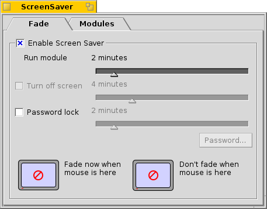
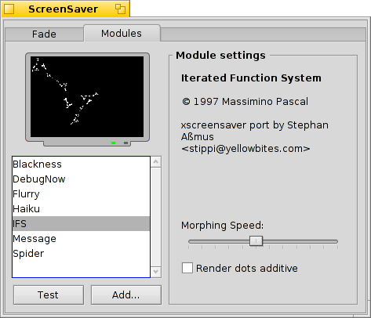

ScreenSaver
ScreenSaver
| Deskbar: | ||
| Location: | /boot/system/preferences/Screensaver | |
| Settings: | ~/config/settings/ScreenSaver_settings |
The panel of the ScreenSaver preferences is split into two tabs:
Fade
The top checkbox enables/disables the screen saver.
With the slider below it, you control after how long an idle time the screen saver kicks in.
The next two sliders are only usable after you activated their checkboxes:
One slider determines after how many minutes the screen is powered off.
The other, after how many minutes you need a password to unlock your machine.
By clicking into different corners of the two screens at the bottom, you tell the system when to immediately start the screen saver or when to prevent it from kicking in when you rest the mouse in the indicated corner. Click in the middle of the screens to disable that feature again.
Modules
The second tab shows a list of all installed screen saver modules and their individual settings. You can test your settings with the button below the list and add modules with the button beside it. Other ways to install new screen savers is by a simple drag&drop into the list. Of course, you can also copy/delete a module's file in its respective user folder, i.e. /boot/common/add-ons/screensavers/ or /boot/home/config/add-ons/screensavers/ (see topic Filesystem layout).